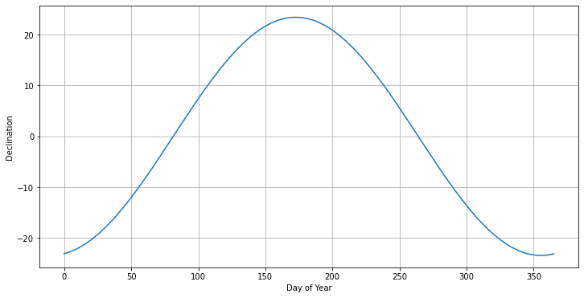

ASHRAE Irradiance sample calculation#
import numpy as np
import pandas as pd
import hvplot.pandas
import matplotlib.pyplot as plt
---------------------------------------------------------------------------
ModuleNotFoundError Traceback (most recent call last)
Cell In[1], line 3
1 import numpy as np
2 import pandas as pd
----> 3 import hvplot.pandas
5 import matplotlib.pyplot as plt
ModuleNotFoundError: No module named 'hvplot'
ASHRAE provides a formula for calculating the irradiance at the surface on a plane that is perpendicular to the incoming solar radiation. This equation is:
\[ I_B = A e^{-Km} \]
where
\[ A = 1160 + 75 sin[360(n - 275)/365] \]
\[ K = 0.174 + 0.035 sin[360(n - 100)/365] \]
\[ m = 1/ sin(\beta) \]
\[ \beta = 90 - Latitude + Declination \]
\[ Declination = \delta = 23.45 sin[360/365 (n - 81)] \]
and n is the day number (e.g., May 1 = 31 + 28 + 31 + 30 + 1 = 121). A is the irradiance (W m-2), K is the attenuation per air mass, and m is the air mass.
def declination(day):
d = -23.44 * np.cos( (2.*np.pi) / 365.25 * (day + 10) ) # Approximate
return d
def declination(day):
d = 23.44 * np.cos( (2.*np.pi) / 365.25 * (day - 81) ) # Approximate
return d
def A(n):
return 1160. + 75.*np.sin(360/365*(n-275)*np.pi/180) # W m-2
def K(n):
return 0.174 +0.035*np.sin(360/365*(n-100)*np.pi/180) # unitless
def m(latitude, declination):
return 1. / np.sin((90. - latitude + declination)*np.pi/180)
days = np.arange(0,366)
dec = []
for day in days:
dec.append(declination(day))
dec = np.array(dec)
plt.figure(figsize=(12,6))
plt.plot(days, dec)
plt.grid();
plt.xlabel('Day of Year');
plt.ylabel('Declination');

A(121)
1124.6630369244601
K(121)
0.186378664276173
declination(121)
14.788451200638994
m(46.73, declination(121))
1.1784278038586675
lat = 46.73
day = 121
dec = declination(day)
Ib = A(day) * np.exp(-K(day)*m(lat, dec))
print('The ASHRAE irradiance at the surface is %4.0f W m-2'% Ib)
The ASHRAE irradiance at the surface is 903 W m-2
Now create an annual cycle of solar radiation#
dates = pd.date_range('2023-01-01', '2023-12-31', freq='d')
dec = []
Ib = []
for date in dates:
day = int(date.strftime('%-j'))
dec.append(declination(day))
Ib.append(A(day) * np.exp(-K(day)*m(lat, dec[-1])))
dec = np.array(dec)
df = pd.DataFrame({'declination': dec, 'irradiance': Ib})
df.index = dates
df.declination.plot(figsize=(16,6), grid=True)
<AxesSubplot:>
df.irradiance.plot(figsize=(16,6), grid=True)
<AxesSubplot:>
NOTE THAT this is the solar radiation (in W m-2) on a surface that is always perpendicular to the sunlight. This is quite different from the TOA insolation that we calculated before. See the figures in the Solar Radiation Calculator for another example.